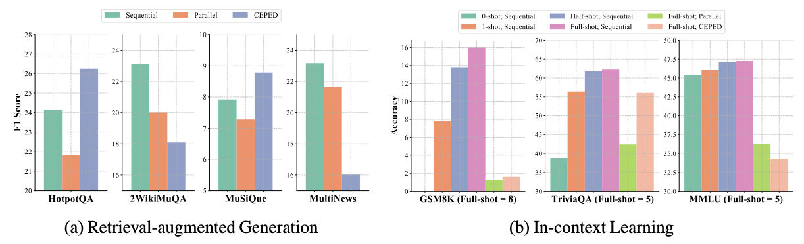
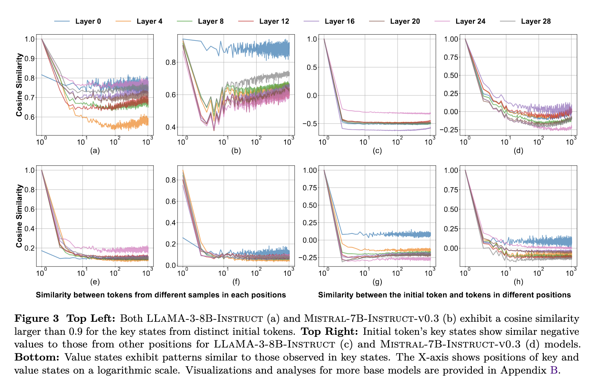
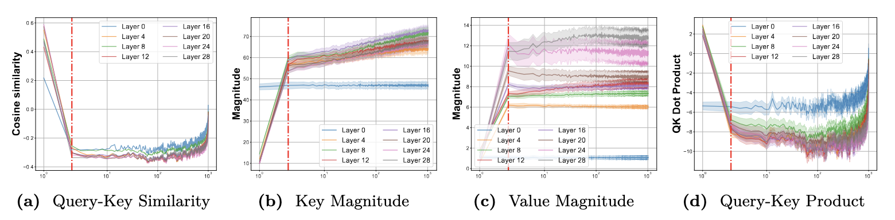
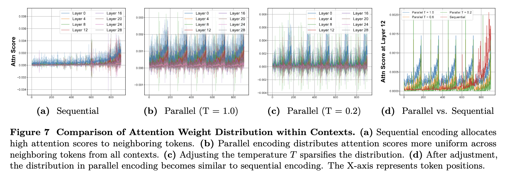
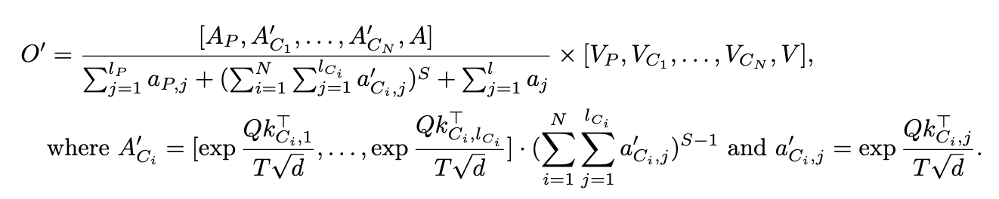

In Part 2, we will detail our key observations, which further motivated our design of APE. First, we highlight the limitations of trainable approaches in generalizing to complex reasoning tasks. Second, we explore the alignments and misalignments between parallel encoding and sequential encoding. Based on these key observations, we introduce APE to strengthen these alignments via three steps during inference time, enabling fast, accurate, and generalizable CAG systems in practice.

With results on RAG and ICL tasks, we find both parallel encoding and its fine-tuned variant CEPED cannot generalize to math reasoning. Thus, fine-tuning models to improve parallel encoding on complex tasks requires (i) more diverse and labeled data, and (ii) resource-intensive instruction-tuning, offering an unfavorable trade-off between training costs and model capabilities.
KV states from different contexts are similar in direction.

The initial KV states show consistent directions across examples, with subsequent states forming similar, larger angles relative to them. This suggests that KV state directions remain consistent across contexts, primarily shaped by the initial KV states.
KV states from different contexts are similar in magnitude.

In most positions, the magnitude of key states increases very slowly, while the magnitude of value states remains consistent.
KV states from the initial and recent positions are not similar to others.
In the figures above, we observe a discrepancy in direction and magnitude for the initial and recent positions, leading to large attention scores at these positions. This is due to the presence of an attention sink and the influence of position embeddings.
With all the lessons, we design our APE to address these misalignments, recovering the accuracy of parallel encoding with three steps.
Prepending Shared Prefix.
To avoid duplicating abnormal KV states for the few few positions, we prepend a shared prefix to all contexts to ensure that these KV states appear only once in each generation step. In practice, we use either system prompts and instructions, or newline characters as our prefix.
Adjusting Attention Temperature.

Duplicating neighboring KV states in parallel encoding disperse the query's attention to multiple contexts, leading to a uniform distribution. We adjust the attention temperature to a value less than 1 to refocus on the most relevant tokens, sharpening the distribution after Softmax.
Adding Scaling Factor.
While adjusting the temperature sharpens the distribution among context tokens, it will also increase the absolute value of LogSumExp(QK) among them. To compensate for these changes, we finally introduce a scaling factor less than 1 to reduce this absolute value.
Formulation.
After incorporating the proposed changes, the formula for our APE attention calculation becomes:

Here, AP, A'C, A represents the attention weights for prefix, context, and query/generation tokens, respectively. Similarly, VP, VC, V denote the corresponding value states. The attention temperature T and the scaling factor S for the context are less than 1.
Pseudocode.
APE can be efficiently implemented by employing flash attention twice for the computation for context and non-context tokens seperately, and then merge these two parts into the final results. This only introduces a marginal computational overhead, as the pseudo codeshown below.
def ape_attention(query, key, value, temperature, scale):
# split key and value states into context and non-context parts
key_context, key_other = key
value_context, value_other = value
attn_output_context, lse_context = flash_attn(query, key, value, temperature=temperature)
attn_output_other, lse_other = flash_attn(query, key, value)
lse_context = lse_context * scale
attn_weights = [lse_context, lse_other]
attn_weights = Softmax(attn_weights)
value_states = [attn_output_context, attn_output_other]
attn_output = attn_weights @ value_states
This work explores the potential of parallel encoding in CAG scenarios, which can pre-cache KV states for fast inference and re-use positions for long context but leads to worse performance. To address this issue, we propose APE, a training-free method to enable accurate, fast, and long CAG systems. APE achieves this by aligning the attention weight distribution of parallel encoding with sequential encoding via three steps: shared prefix, adaptive temperature, and scaling factor. APE improves both accuracy and efficiency in retrieval-augmented generation (RAG) and in-context learning (ICL) tasks while successfully scaling to process hundreds of chunks in parallel. Future research directions include automating hyperparameter selection for diverse inputs, developing APE-cache serving systems, and extending APE to multimodal scenarios.
@inproceedings{yang2025ape,
title={Faster and Longer Context-Augmented Generation via Adpative Parallel Encoding},
author={Yang, Xinyu and Chen, Tianqi and Chen, Beidi},
booktitle={The Thirteenth International Conference on Learning Representations (ICLR)},
year={2025}
}